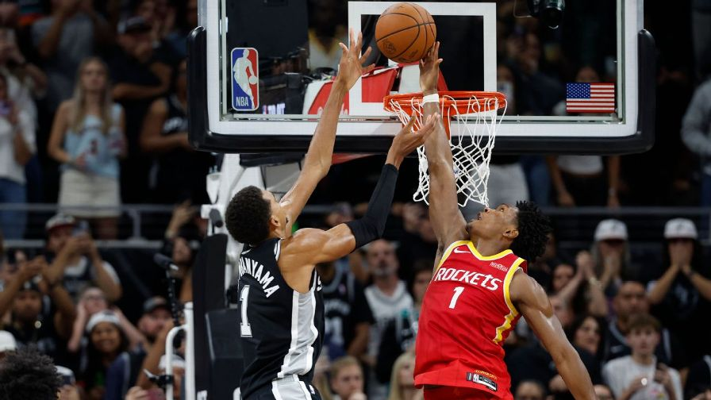
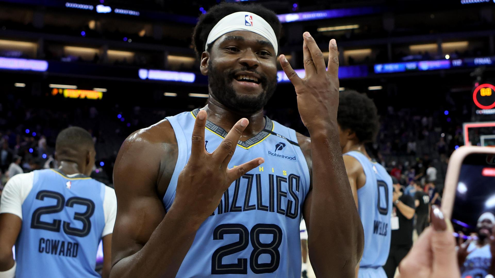

NBAGrizzliesSeason ranks
Season ranksout of 30 teams · OK opens Team stats
Points
T-8th
119.0 a game
Points allowed
7th
107.7 a game
Rebounds
T-2nd
52.0 a game
3-point %
7th
38.1%
Blocks
T-6th
6.7 a game
Assists
T-18th
24.7 a game
Field goal %
16th
46.0%
Steals
25th
7.0 a game
Turnovers
T-19th
16.7 a game
NewsESPN · Grizzlies

NBA breakout players: 30 ready for the next step (yes, even Wemby and Luka)Story · 6 h ago
Grizzlies play the Jazz, aim for 4th straight winPreview · 18 h ago

Ty Jerome scores 31 points to lead the Grizzlies to a 123-112 win over the KingsRecap · 19 h ago

Memphis heads to Sacramento for conference showdownPreview · Yesterday
Roster18 playersseason averages
#PLAYERGPMINPTSREBASTFG%3P%
2Ty JeromeG331.734.74.35.756.342.9